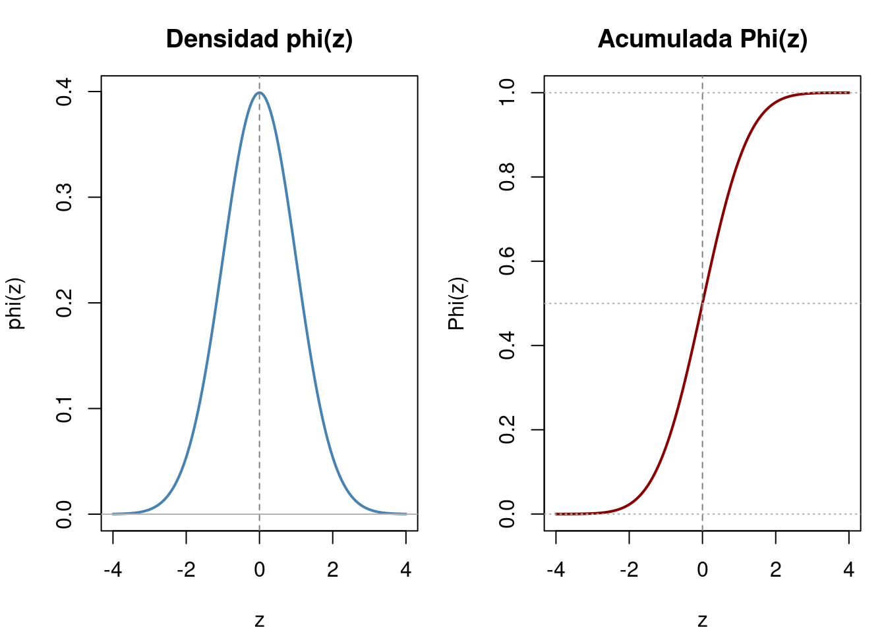
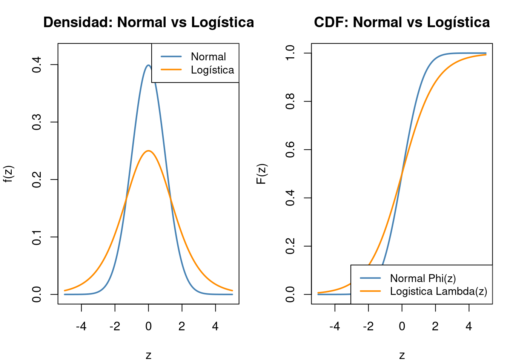
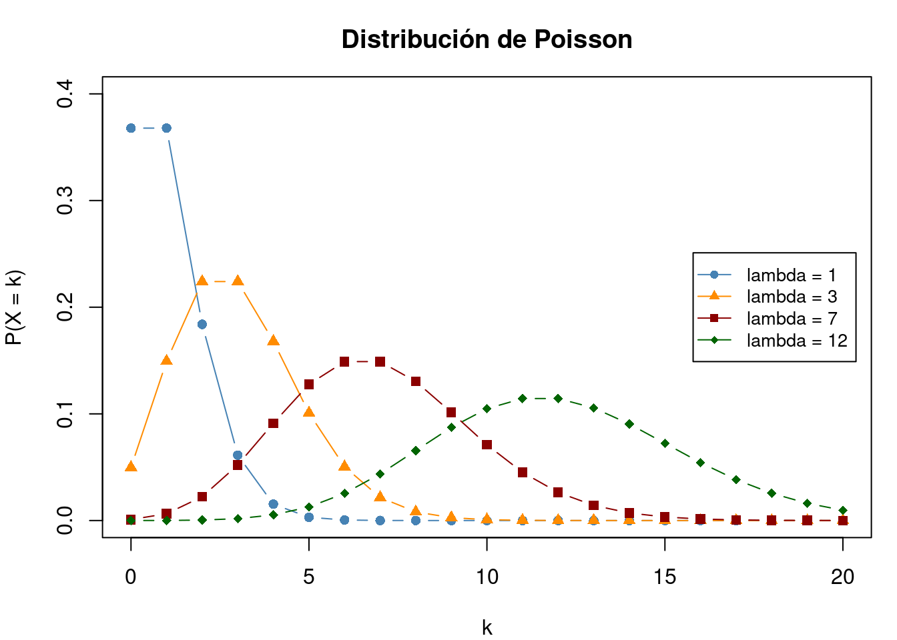
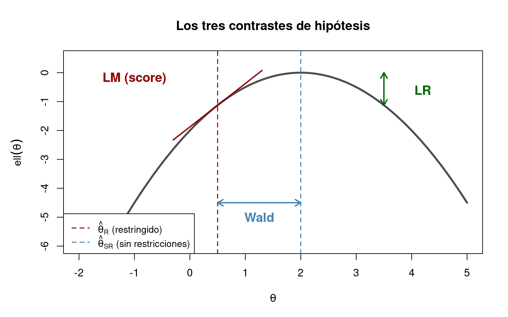
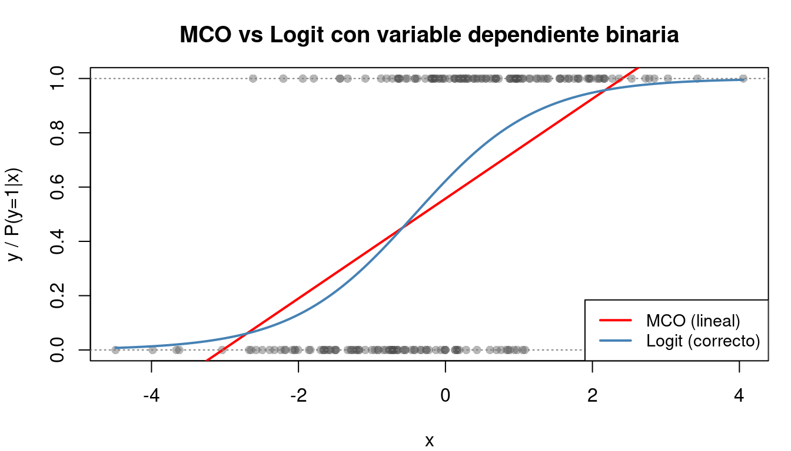

1 Fundamentos de Probabilidad, Inferencia y Econometría
1.1 Introducción: ¿qué necesitamos saber antes de empezar?
La microeconometría estudia el comportamiento de agentes individuales — personas, hogares, empresas — utilizando modelos estadísticos adaptados a la naturaleza de los datos. A diferencia de la econometría clásica, donde la variable dependiente suele ser continua y sin restricciones, en microeconometría la variable dependiente presenta características que exigen un tratamiento específico. En ocasiones se trata de una variable binaria que refleja una decisión discreta, como participar o no en el mercado laboral. En otros casos, la variable está censurada, por ejemplo, las horas trabajadas, que acumulan una masa de observaciones en cero para quienes no trabajan. También puede tratarse de un recuento, como el número de visitas al médico, que solo toma valores enteros no negativos. Finalmente, la variable puede ser ordenada, como el nivel de satisfacción (bajo, medio, alto), donde las categorías tienen un orden natural pero las distancias entre ellas no están definidas.
Cada una de estas situaciones requiere un modelo específico (Logit, Probit, Tobit, Poisson…), y todos ellos comparten un conjunto de herramientas matemáticas y estadísticas que debemos dominar antes de avanzar.
Este tema cubre esos fundamentos. El alumno que complete este capítulo dispondrá de las bases necesarias para seguir con confianza el resto del curso.
Nota: Este tema es un repaso. Se asume que el alumno ha cursado Estadística y Econometría. El objetivo no es enseñar desde cero, sino consolidar y conectar los conceptos con la microeconometría.
Organizaremos el repaso en seis grandes bloques:
- Probabilidad: variables aleatorias, distribuciones, esperanza y varianza.
- Estimación e inferencia: propiedades de los estimadores y Máxima Verosimilitud.
- Contrastes de hipótesis: Wald, LR y LM.
- El modelo lineal (MCO): formulación, supuestos y limitaciones.
- Especificación y diagnóstico: la checklist que todo econometrista debe seguir.
- Conceptos avanzados: variable latente, efectos marginales.
1.2 Repaso de probabilidad
1.2.1 Variables aleatorias
Una variable aleatoria \(X\) es una función que asigna un valor numérico a cada resultado de un experimento aleatorio. Distinguimos dos tipos:
- Discreta: toma un conjunto numerable de valores. Ejemplo: número de hijos (\(X \in \{0, 1, 2, \ldots\}\)).
- Continua: toma cualquier valor en un intervalo. Ejemplo: renta (\(X \in [0, +\infty)\)).
1.2.2 Función de densidad y distribución acumulada
Para una variable continua \(X\):
- La función de densidad de probabilidad (pdf) \(f(x)\) describe la probabilidad relativa de que \(X\) tome un valor cercano a \(x\). Cumple:
\[f(x) \geq 0 \quad \text{y} \quad \int_{-\infty}^{+\infty} f(x)\, dx = 1\]
- La función de distribución acumulada (cdf) \(F(x)\) da la probabilidad de que \(X\) sea menor o igual que \(x\):
\[F(x) = P(X \leq x) = \int_{-\infty}^{x} f(t)\, dt\]
La relación entre ambas es directa: \(f(x) = F'(x)\).
Para una variable discreta, la pdf se sustituye por la función de masa de probabilidad (pmf):
\[P(X = x) = p(x), \quad \sum_x p(x) = 1\]
1.2.3 Esperanza, varianza y momentos
La esperanza (o media) de \(X\) mide su valor central:
\[E[X] = \int_{-\infty}^{+\infty} x \, f(x) \, dx \quad \text{(continua)} \qquad E[X] = \sum_x x \, p(x) \quad \text{(discreta)}\]
La varianza mide la dispersión alrededor de la media:
\[\text{Var}(X) = E\left[(X - E[X])^2\right] = E[X^2] - (E[X])^2\]
La desviación típica es \(\sigma = \sqrt{\text{Var}(X)}\).
Propiedades útiles (que usaremos constantemente):
- \(E[aX + b] = aE[X] + b\)
- \(\text{Var}(aX + b) = a^2 \text{Var}(X)\)
- Si \(X\) e \(Y\) son independientes: \(E[XY] = E[X]E[Y]\)
1.2.4 Distribuciones clave para microeconometría
A lo largo del curso utilizaremos cuatro distribuciones fundamentales. Conviene tenerlas bien presentes.
1.2.4.1 Distribución Normal
La distribución Normal o gaussiana \(X \sim N(\mu, \sigma^2)\) tiene densidad:
\[f(x) = \frac{1}{\sigma\sqrt{2\pi}} \exp\left(-\frac{(x-\mu)^2}{2\sigma^2}\right)\]
La Normal estándar (\(\mu=0\), \(\sigma=1\)) tiene una notación especial que usaremos constantemente:
- \(\phi(z) = \frac{1}{\sqrt{2\pi}} e^{-z^2/2}\) es la densidad (pdf).
- \(\Phi(z) = P(Z \leq z)\) es la distribución acumulada (cdf).
Propiedades esenciales de \(\phi\) y \(\Phi\):
- Simetría: \(\phi(-z) = \phi(z)\) y \(\Phi(-z) = 1 - \Phi(z)\).
- \(\phi'(z) = -z \cdot \phi(z)\) (derivada de la densidad).
- \(\Phi'(z) = \phi(z)\).
¿Por qué importa? En los modelos Probit y Tobit, las probabilidades y los efectos marginales se expresan directamente en función de \(\Phi\) y \(\phi\). Si no se dominan, no se puede interpretar ninguno de estos modelos.
1.2.4.2 Distribución Logística
La distribución Logística estándar tiene cdf:
\[\Lambda(z) = \frac{e^z}{1 + e^z} = \frac{1}{1 + e^{-z}}\]
y densidad:
\[\lambda(z) = \frac{e^z}{(1 + e^z)^2} = \Lambda(z)\left[1 - \Lambda(z)\right]\]
¿Por qué importa? En los modelos Logit, las probabilidades se modelizan con \(\Lambda\). La expresión \(\Lambda(z)[1-\Lambda(z)]\) aparece en todos los efectos marginales.
La Normal y la Logística son muy parecidas, pero la Logística tiene colas más pesadas (mayor probabilidad en los extremos).

1.2.4.3 Distribución de Poisson
La distribución de Poisson modela el número de veces que ocurre un evento en un intervalo. Si \(X \sim \text{Poisson}(\lambda)\):
\[P(X = k) = \frac{e^{-\lambda} \lambda^k}{k!}, \quad k = 0, 1, 2, \ldots\]
- \(E[X] = \lambda\)
- \(\text{Var}(X) = \lambda\) (propiedad de equidispersión: media = varianza)
¿Por qué importa? En el Tema 4 estudiaremos modelos de datos de recuento basados en Poisson. La restricción de equidispersión es clave: cuando no se cumple, necesitamos la Binomial Negativa.

1.2.4.4 Distribución Binomial
La distribución Binomial modela el número de éxitos en \(n\) ensayos independientes con probabilidad de éxito \(p\). Si \(X \sim \text{Bin}(n, p)\):
\[P(X = k) = \binom{n}{k} p^k (1-p)^{n-k}\]
- \(E[X] = np\)
- \(\text{Var}(X) = np(1-p)\)
El caso particular \(n = 1\) es la distribución Bernoulli, que aparece en todos los modelos de variable dependiente binaria (Logit, Probit).
1.2.5 Ejemplo numérico: cálculo de probabilidades con \(\Phi(z)\)
Supongamos que la renta mensual de los hogares sigue una distribución \(X \sim N(2000, 500^2)\), es decir, media 2000 € y desviación típica 500 €.
Pregunta: ¿Cuál es la probabilidad de que un hogar tenga una renta inferior a 1200 €?
Paso 1: Estandarizar.
\[z = \frac{x - \mu}{\sigma} = \frac{1200 - 2000}{500} = -1{,}6\]
Paso 2: Buscar \(\Phi(-1{,}6)\).
\[P(X < 1200) = \Phi(-1{,}6) = 1 - \Phi(1{,}6) = 1 - 0{,}9452 = 0{,}0548\]
Interpretación: Aproximadamente un 5,5 % de los hogares tiene una renta inferior a 1200 €.
En R:
pnorm(1200, mean = 2000, sd = 500)devuelve directamente0.0548.
1.3 Estimación e inferencia
1.3.1 Estimadores: propiedades deseables
Un estimador \(\hat{\theta}\) es una función de los datos que utilizamos para aproximar un parámetro desconocido \(\theta\). Las propiedades deseables son:
| Propiedad | Definición | Significado intuitivo |
|---|---|---|
| Insesgadez | \(E[\hat{\theta}] = \theta\) | En promedio, acierta |
| Eficiencia | Menor varianza posible | Es el más preciso entre los insesgados |
| Consistencia | \(\hat{\theta} \xrightarrow{p} \theta\) cuando \(n \to \infty\) | Converge al valor real |
| Normalidad asintótica | \(\sqrt{n}(\hat{\theta} - \theta) \xrightarrow{d} N(0, V)\) | Para muestras grandes, es aproximadamente normal |
En microeconometría, la consistencia y la normalidad asintótica son las propiedades más importantes, ya que los estimadores de Máxima Verosimilitud (que usaremos constantemente) no suelen ser insesgados en muestras finitas, pero sí consistentes y asintóticamente normales.
1.3.2 Método de Máxima Verosimilitud (MV)
1.3.2.1 Concepto fundamental
Supongamos que disponemos de una muestra de \(n\) observaciones independientes \(y_1, y_2, \ldots, y_n\), cada una generada por una distribución con densidad \(f(y_i | \theta)\) que depende de un parámetro desconocido \(\theta\).
La función de verosimilitud es la probabilidad conjunta de observar la muestra, vista como función de \(\theta\):
\[\mathcal{L}(\theta) = \prod_{i=1}^{n} f(y_i | \theta)\]
La idea de MV es: elegir el valor de \(\theta\) que maximiza la probabilidad de haber observado los datos que tenemos.
En la práctica, maximizamos la log-verosimilitud (es más cómodo y numéricamente estable):
\[\ell(\theta) = \ln \mathcal{L}(\theta) = \sum_{i=1}^{n} \ln f(y_i | \theta)\]
La condición de primer orden es:
\[\frac{\partial \ell(\theta)}{\partial \theta} = 0\]
1.3.2.2 Ejemplo numérico: MV para una distribución Bernoulli
Supongamos que observamos los resultados de 10 individuos: 7 participan en el mercado laboral (\(y = 1\)) y 3 no (\(y = 0\)). Si asumimos \(y_i \sim \text{Bernoulli}(p)\), ¿cuál es el estimador MV de \(p\)?
Verosimilitud:
\[\mathcal{L}(p) = \prod_{i=1}^{10} p^{y_i}(1-p)^{1-y_i} = p^7(1-p)^3\]
Log-verosimilitud:
\[\ell(p) = 7\ln(p) + 3\ln(1-p)\]
Condición de primer orden:
\[\frac{\partial \ell}{\partial p} = \frac{7}{p} - \frac{3}{1-p} = 0\]
Resolviendo:
\[7(1-p) = 3p \quad \Rightarrow \quad 7 = 10p \quad \Rightarrow \quad \hat{p}_{MV} = 0{,}7\]
El resultado es intuitivo: el estimador MV de la proporción es la proporción muestral.
1.3.2.3 Propiedades asintóticas del estimador MV
Bajo condiciones de regularidad, el estimador MV \(\hat{\theta}_{MV}\) tiene tres propiedades fundamentales:
- Consistencia: \(\hat{\theta}_{MV} \xrightarrow{p} \theta_0\) (converge al valor verdadero).
- Normalidad asintótica: \(\sqrt{n}(\hat{\theta}_{MV} - \theta_0) \xrightarrow{d} N(0, \mathcal{I}(\theta_0)^{-1})\), donde \(\mathcal{I}(\theta_0)\) es la información de Fisher.
- Eficiencia asintótica: alcanza la cota inferior de Cramér-Rao; no existe un estimador consistente con menor varianza asintótica.
¿Por qué importa? Todos los modelos de microeconometría (Logit, Probit, Tobit, Poisson) se estiman por MV. La normalidad asintótica es lo que nos permite hacer contrastes de hipótesis e intervalos de confianza con estos modelos.
1.3.2.4 Comparación MV vs MCO
| Aspecto | MCO | MV |
|---|---|---|
| Supuesto de distribución | No requiere (Gauss-Markov) | Requiere especificar \(f(y|X, \theta)\) |
| Variable dependiente | Continua, sin restricciones | Cualquier tipo |
| Propiedades | BLUE (insesgado, eficiente entre lineales) | Consistente, asintóticamente eficiente |
| Inferencia | Exacta con normalidad, asintótica sin ella | Siempre asintótica |
| Uso en microeconometría | Solo como referencia/comparación | Método principal |
Regla práctica: Si la variable dependiente es continua y no tiene restricciones, MCO suele ser suficiente. En cualquier otro caso (binaria, censurada, recuento, ordenada), necesitamos MV.
1.4 Contraste de hipótesis
En econometría, constantemente necesitamos contrastar hipótesis del tipo:
\[H_0: R\beta = q \quad \text{vs} \quad H_1: R\beta \neq q\]
Existen tres enfoques fundamentales, los tres asintóticamente equivalentes. Los presentamos aquí porque los usaremos en todos los temas del curso.
1.4.1 Contraste de Wald
Idea: Estimar el modelo sin restricciones y comprobar si el estimador \(\hat{\theta}\) está lejos del valor que impone \(H_0\).
\[W = (\hat{\theta} - \theta_0)' \left[\text{Var}(\hat{\theta})\right]^{-1} (\hat{\theta} - \theta_0) \xrightarrow{d} \chi^2_q\]
donde \(q\) es el número de restricciones.
Caso particular (un solo parámetro):
\[W = \left(\frac{\hat{\theta} - \theta_0}{\text{se}(\hat{\theta})}\right)^2\]
que no es más que el cuadrado del habitual estadístico \(t\).
Ventaja: Solo necesita el modelo sin restricciones.
1.4.2 Contraste de Razón de Verosimilitudes (LR)
Idea: Estimar el modelo con y sin restricciones, y comparar las log-verosimilitudes.
\[LR = 2\left[\ell(\hat{\theta}_{SR}) - \ell(\hat{\theta}_{R})\right] \xrightarrow{d} \chi^2_q\]
donde \(\ell(\hat{\theta}_{SR})\) es la log-verosimilitud sin restricciones y \(\ell(\hat{\theta}_{R})\) la restringida.
Ventaja: Intuitivo: compara directamente cuánto «pierde» el modelo al imponer la restricción.
1.4.3 Contraste del Multiplicador de Lagrange (LM / Score)
Idea: Estimar el modelo solo con restricciones y comprobar si las condiciones de primer orden del modelo sin restricciones se satisfacen.
\[LM = s(\hat{\theta}_R)' \mathcal{I}(\hat{\theta}_R)^{-1} s(\hat{\theta}_R) \xrightarrow{d} \chi^2_q\]
donde \(s(\hat{\theta}_R)\) es el vector score evaluado en el estimador restringido.
Ventaja: Solo necesita el modelo restringido (útil cuando el modelo sin restricciones es difícil de estimar).
1.4.4 Comparación de los tres contrastes

Los tres contrastes son asintóticamente equivalentes: para muestras grandes, los tres dan resultados prácticamente idénticos. En muestras finitas pueden diferir ligeramente. En la práctica:
- Wald es el más usado porque solo requiere un modelo.
- LR es el más intuitivo.
- LM es útil cuando el modelo completo es difícil de estimar.
1.4.5 Ejemplo numérico: test de significatividad individual
Supongamos que hemos estimado un modelo y obtenemos \(\hat{\beta}_1 = 0{,}45\) con \(\text{se}(\hat{\beta}_1) = 0{,}18\).
Queremos contrastar \(H_0: \beta_1 = 0\) vs \(H_1: \beta_1 \neq 0\).
Test de Wald (versión \(t\)):
\[t = \frac{\hat{\beta}_1 - 0}{\text{se}(\hat{\beta}_1)} = \frac{0{,}45}{0{,}18} = 2{,}50\]
El p-valor es \(P(|Z| > 2{,}50) = 2\Phi(-2{,}50) = 2 \times 0{,}0062 = 0{,}0124\).
Conclusión: Al 5 % de significación, rechazamos \(H_0\). El coeficiente es estadísticamente significativo.
1.5 Repaso del Modelo Lineal (MCO)
1.5.1 Formulación
El modelo lineal clásico se expresa como:
\[\mathbf{y} = \mathbf{X}\boldsymbol{\beta} + \boldsymbol{\varepsilon}\]
donde:
- \(\mathbf{y}\) es el vector \(n \times 1\) de observaciones de la variable dependiente.
- \(\mathbf{X}\) es la matriz \(n \times k\) de variables explicativas (incluye la constante).
- \(\boldsymbol{\beta}\) es el vector \(k \times 1\) de parámetros a estimar.
- \(\boldsymbol{\varepsilon}\) es el vector \(n \times 1\) de perturbaciones.
El estimador MCO es:
\[\hat{\boldsymbol{\beta}}_{MCO} = (\mathbf{X}'\mathbf{X})^{-1}\mathbf{X}'\mathbf{y}\]
1.5.2 Supuestos clásicos
Los supuestos del modelo lineal clásico son:
- Linealidad: \(\mathbf{y} = \mathbf{X}\boldsymbol{\beta} + \boldsymbol{\varepsilon}\) (el modelo es lineal en los parámetros).
- Rango completo: \(\text{rango}(\mathbf{X}) = k\) (no hay multicolinealidad perfecta).
- Exogeneidad estricta: \(E[\boldsymbol{\varepsilon} | \mathbf{X}] = \mathbf{0}\) (las perturbaciones no dependen de \(\mathbf{X}\)).
- Esfericidad: \(\text{Var}(\boldsymbol{\varepsilon} | \mathbf{X}) = \sigma^2 \mathbf{I}_n\) (homocedasticidad y no autocorrelación).
- Normalidad (opcional): \(\boldsymbol{\varepsilon} | \mathbf{X} \sim N(\mathbf{0}, \sigma^2 \mathbf{I}_n)\).
1.5.3 Propiedades de los estimadores MCO (Gauss-Markov)
Si se cumplen los supuestos 1-4, el estimador MCO es BLUE (Best Linear Unbiased Estimator):
- Insesgado: \(E[\hat{\boldsymbol{\beta}}] = \boldsymbol{\beta}\).
- Eficiente: tiene la menor varianza entre todos los estimadores lineales e insesgados.
- Consistente: \(\hat{\boldsymbol{\beta}} \xrightarrow{p} \boldsymbol{\beta}\) cuando \(n \to \infty\).
La varianza del estimador es:
\[\text{Var}(\hat{\boldsymbol{\beta}}) = \sigma^2 (\mathbf{X}'\mathbf{X})^{-1}\]
1.5.4 Bondad de ajuste: \(R^2\) y \(R^2\) ajustado
El coeficiente de determinación mide qué proporción de la variabilidad de \(y\) explica el modelo:
\[R^2 = 1 - \frac{SCR}{SCT} = 1 - \frac{\sum \hat{\varepsilon}_i^2}{\sum (y_i - \bar{y})^2}\]
El \(R^2\) ajustado penaliza por el número de variables:
\[\bar{R}^2 = 1 - \frac{SCR / (n-k)}{SCT / (n-1)}\]
Advertencia importante para el curso: El \(R^2\) es una medida válida para el modelo lineal con MCO. En modelos no lineales (Logit, Probit, Tobit, Poisson), el \(R^2\) no tiene la misma interpretación y no es un criterio fiable. Usaremos en su lugar la log-verosimilitud, AIC y BIC.
1.5.5 Limitaciones de MCO cuando la variable dependiente es limitada
MCO parte del supuesto de que \(y\) puede tomar cualquier valor en \((-\infty, +\infty)\). Cuando la variable dependiente no satisface este supuesto, la estimación por MCO presenta deficiencias graves. En primer lugar, si la variable dependiente es binaria (\(y \in \{0, 1\}\)), el modelo lineal puede generar predicciones fuera del rango \([0, 1]\), lo que carece de sentido probabilístico. En segundo lugar, cuando la variable dependiente está censurada — con una acumulación de observaciones en un límite, típicamente cero —, MCO produce un sesgo de atenuación que subestima sistemáticamente el efecto de las variables explicativas. Finalmente, en modelos con variable dependiente binaria aparece un problema de heterocedasticidad inherente, puesto que \(\text{Var}(\varepsilon_i | X_i) = p_i(1-p_i)\) depende de las propias variables explicativas, violando el supuesto de varianza constante.

Estos problemas son la razón de ser de todo este curso: necesitamos modelos específicos para cada tipo de variable dependiente limitada.
1.6 Especificación y diagnóstico del modelo
Este apartado es fundamental. El alumno debe entender que estimar un modelo es solo el primer paso; validar que el modelo es correcto es igualmente importante.
1.6.1 ¿Qué significa que un modelo esté bien especificado?
Un modelo está bien especificado cuando:
- Incluye las variables relevantes y no incluye las irrelevantes.
- La forma funcional es correcta.
- Los supuestos distribucionales se cumplen razonablemente.
- No hay problemas graves de multicolinealidad.
Si el modelo está mal especificado, los estimadores pueden ser sesgados, inconsistentes, o los errores estándar pueden ser incorrectos, invalidando toda la inferencia.
1.6.2 Sesgo por omisión de variables relevantes
Si el modelo verdadero es:
\[y = \beta_0 + \beta_1 x_1 + \beta_2 x_2 + \varepsilon\]
pero estimamos:
\[y = \gamma_0 + \gamma_1 x_1 + u\]
el estimador \(\hat{\gamma}_1\) tiene un sesgo:
\[E[\hat{\gamma}_1] = \beta_1 + \beta_2 \cdot \delta_{21}\]
donde \(\delta_{21}\) es el coeficiente de la regresión auxiliar de \(x_2\) sobre \(x_1\).
Regla práctica:
- Si la variable omitida está correlacionada con las incluidas (\(\delta_{21} \neq 0\)) y tiene efecto sobre \(y\) (\(\beta_2 \neq 0\)): hay sesgo.
- El signo del sesgo depende del producto \(\beta_2 \cdot \delta_{21}\).
1.6.3 Forma funcional: contraste RESET de Ramsey
El test RESET (Regression Equation Specification Error Test) comprueba si la forma funcional es correcta.
Procedimiento:
- Estimar el modelo original y obtener \(\hat{y}\).
- Estimar un modelo aumentado incluyendo \(\hat{y}^2\) y \(\hat{y}^3\) como regresores adicionales.
- Contrastar con un test \(F\) si los coeficientes de \(\hat{y}^2\) y \(\hat{y}^3\) son conjuntamente significativos.
- Si \(H_0\) se rechaza: la forma funcional es inadecuada.
- Si \(H_0\) no se rechaza: no hay evidencia de mala especificación (no implica que sea perfecta).
En R: lmtest::resettest(modelo, power = 2:3, type = "fitted")
1.6.4 Multicolinealidad
La multicolinealidad se produce cuando dos o más variables explicativas están altamente correlacionadas. Consecuencias:
- Los estimadores siguen siendo insesgados y consistentes.
- Pero su varianza aumenta, lo que reduce la potencia de los contrastes.
- Los coeficientes individuales pueden ser no significativos, pero el modelo en conjunto sí.
Indicador: Factor de Inflación de la Varianza (VIF)
\[\text{VIF}_j = \frac{1}{1 - R^2_j}\]
donde \(R^2_j\) es el \(R^2\) de la regresión de \(x_j\) sobre las demás variables.
- \(\text{VIF} = 1\): no hay colinealidad.
- \(\text{VIF} > 5\): preocupante.
- \(\text{VIF} > 10\): grave.
En R: car::vif(modelo)
1.6.5 Análisis de residuos
Los residuos \(\hat{\varepsilon}_i = y_i - \hat{y}_i\) deben cumplir aproximadamente:
- Media cero.
- Varianza constante (homocedasticidad).
- No mostrar patrones sistemáticos.
- Aproximarse a una distribución normal (para inferencia exacta).
Un buen diagnóstico visual incluye:
- Residuos vs valores ajustados: detecta heteroscedasticidad y no linealidad.
- QQ-plot: detecta desviaciones de la normalidad.
- Residuos vs cada variable explicativa: detecta relaciones no lineales omitidas.
1.6.6 Normalidad de los residuos
Test de Shapiro-Wilk:
- \(H_0\): los residuos siguen una distribución normal.
- En R:
shapiro.test(residuals(modelo)) - Sensible al tamaño muestral: con muestras grandes, casi siempre rechaza.
Test de Jarque-Bera:
- Basado en asimetría y curtosis.
- \(JB = \frac{n}{6}\left(S^2 + \frac{(K-3)^2}{4}\right) \sim \chi^2_2\)
- En R:
tseries::jarque.bera.test(residuals(modelo))
Nota práctica: En muestras grandes (frecuentes en microeconometría), la normalidad exacta de los residuos es menos importante gracias a los resultados asintóticos. Lo crucial es detectar desviaciones severas (colas muy pesadas, asimetría extrema).
1.6.7 Homocedasticidad
Test de Breusch-Pagan:
- Estimar el modelo y obtener los residuos \(\hat{\varepsilon}_i\).
- Regresar \(\hat{\varepsilon}_i^2\) sobre las variables explicativas.
- Contrastar si los coeficientes son conjuntamente significativos.
- \(H_0\): homocedasticidad.
- En R:
lmtest::bptest(modelo)
Consecuencias de la heteroscedasticidad:
- Los estimadores MCO siguen siendo insesgados y consistentes.
- Pero los errores estándar clásicos son incorrectos, lo que invalida los contrastes y los intervalos de confianza.
- Solución: usar errores estándar robustos (White/HC).
1.6.8 Bondad de ajuste: más allá del \(R^2\)
En modelos no lineales (que son los que estudiaremos en este curso), el \(R^2\) clásico no es apropiado. Utilizaremos:
Log-verosimilitud: Valor de \(\ell(\hat{\theta})\). Más alto = mejor ajuste.
Criterio de Información de Akaike (AIC):
\[\text{AIC} = -2\ell(\hat{\theta}) + 2k\]
Criterio de Información Bayesiano (BIC):
\[\text{BIC} = -2\ell(\hat{\theta}) + k \ln(n)\]
donde \(k\) es el número de parámetros y \(n\) el tamaño muestral.
- Ambos penalizan la complejidad del modelo.
- BIC penaliza más que AIC (tiende a seleccionar modelos más parsimoniosos).
- En ambos casos: menor es mejor.
1.7 Conceptos avanzados necesarios
1.7.1 Variable latente
Muchos modelos de microeconometría se basan en el concepto de variable latente. La idea es que existe una variable \(y^*\) que no observamos directamente, pero que determina lo que sí observamos.
Formulación general:
\[y^* = \mathbf{x}'\boldsymbol{\beta} + \varepsilon\]
Lo que observamos (\(y\)) es una transformación de \(y^*\):
- Modelo Logit/Probit: \(y = 1\) si \(y^* > 0\), \(y = 0\) en caso contrario.
- Modelo Tobit: \(y = y^*\) si \(y^* > 0\), \(y = 0\) en caso contrario.
Interpretación económica: En un modelo de participación laboral, \(y^*\) puede interpretarse como la «utilidad neta de trabajar». Si \(y^* > 0\), la persona trabaja; si \(y^* \leq 0\), no trabaja. Nunca observamos \(y^*\) directamente, solo la decisión final.
1.7.2 Efectos marginales
En los modelos lineales (MCO), el efecto marginal es simplemente el coeficiente \(\beta_j\):
\[\frac{\partial E[y | \mathbf{x}]}{\partial x_j} = \beta_j\]
En modelos no lineales, esto ya no es cierto. El efecto marginal depende del punto donde se evalúa:
\[\frac{\partial E[y | \mathbf{x}]}{\partial x_j} = g(\mathbf{x}'\boldsymbol{\beta}) \cdot \beta_j\]
donde \(g(\cdot)\) depende del modelo:
- Logit: \(g = \Lambda(z)[1 - \Lambda(z)]\)
- Probit: \(g = \phi(z)\)
- Tobit: \(g = \Phi(z/\sigma)\)
Existen dos formas habituales de reportar efectos marginales:
- MEM (Marginal Effect at the Mean): evaluar en \(\bar{\mathbf{x}}\).
- AME (Average Marginal Effect): calcular el efecto para cada observación y promediar.
En la práctica, el AME es preferible porque no asume que el «individuo medio» sea representativo.
1.8 Funciones esenciales en R
A lo largo de este tema (y del curso) utilizaremos estas funciones de R:
Distribuciones:
dnorm(),pnorm(),qnorm(),rnorm()— Normaldlogis(),plogis()— Logísticadpois(),ppois()— Poissondbinom(),pbinom()— Binomial
Estimación:
lm()— Mínimos Cuadrados Ordinariosoptim()— Optimización numérica (para MV manual)
Inferencia y diagnóstico:
summary()— Resumen del modelocoeftest()(lmtest) — Test de coeficientes con errores robustosvcovHC()(sandwich) — Matriz de varianzas-covarianzas robustaresettest()(lmtest) — Test RESET de Ramseyvif()(car) — Factor de inflación de la varianzabptest()(lmtest) — Test de Breusch-Paganshapiro.test()— Test de normalidad de Shapiro-Wilkwaldtest(),lrtest()(lmtest) — Contrastes de Wald y LR
Bondad de ajuste:
AIC(),BIC()— Criterios de informaciónlogLik()— Log-verosimilitud
Código R del capítulo
El script completo de este capítulo (T00_mECO_Script_Fundamentos.R) está disponible en el repositorio de material complementario del manual:
https://github.com/carlanta/MicroEconometrics
El alumno puede descargar el script directamente desde la carpeta scripts/ del repositorio y ejecutarlo en RStudio de forma interactiva.